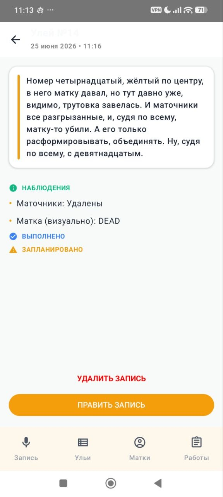
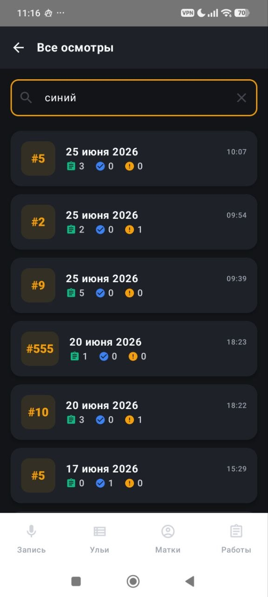
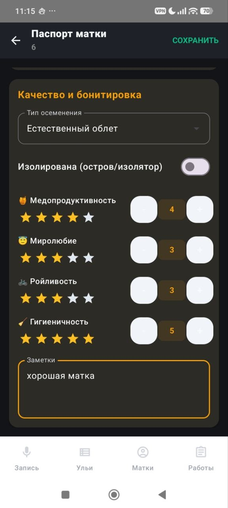
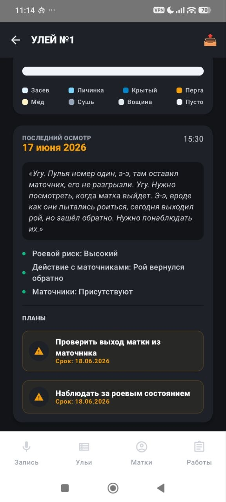

Приложение сохраняет ваши голосовые осмотры, фиксирует абсолютно все детали и само структурирует их так, как удобно именно вам для дальнейшей работы. Экономит кучу времени и сил.
Именно в тот момент, когда улей открыт, нужно сохранить информацию и принять верное решение. Именно в этот момент мы помогаем: точно сохраняем все данные, помогаем максимизировать силу семьи, сберечь драгоценное время короткого сезона и увеличить прибыльность вашей пасеки.
Если вы думаете о расширении пасеки, выводите маток, нанимаете помощников или просто хотите меньше мучаться — потерянные записи бьют прямо по вашему карману.
Забыли, в каком улье матка была неплодная, где заложили свищевые маточники, а где семья проседает по кормам? В разгар сезона одна упущенная мелочь — это слетевший рой, трутовка и сорванный медосбор.
Поручили обход помощнику? Вместо неразборчивых записей на клочках бумаги работник просто надиктовывает улей вслух. Вы получаете прозрачный журнал каждого улья без необходимости перепроверять всё лично.
Секретарь мгновенно раскладывает параметры семьи по карточкам. Вы точно знаете дату подсадки матки, динамику расплода и когда нужно расширение. Принимайте верные решения и увеличивайте силу каждой семьи.
Телефон лежит в кармане. Вам не страшны ни злые пчёлы, ни перчатки в липком воске и прополисе, ни шум ветра.
Перед выходом на пасеку один раз активируете «Свободные руки». Телефон в карман. Подошли к семье — сказали: «Улей номер 5» или «Старт». Звуковой отклик подтвердит начало.
Диктуйте своими словами и профессиональным сленгом: состояние расплода, поведение матки, сушь, вощину, силу, запасы кормов. Шумоподавление чётко фильтрует гул пасеки и порывы ветра.
Закончили осмотр — скомандовали: «Конец записи» или «Стоп». Запись автоматически нарезается, раскладывается по карточке улья и сохраняется даже без связи. И вы спокойно идете дальше.
Крупные кнопки, высокий контраст для чтения на ярком солнце и мгновенное разделение по ульям.




Вся история ваших осмотров превращается в единую структурированную базу. Вы можете в любой момент спросить секретаря о состоянии любого улья или запланировать выезд.
Спросите: *«В каких ульях матки 2024 года?»* или *«Где нужно расширение сушью?»* — секретарь выдаст точный список.
Секретарь сопоставляет запланированные расширения, обработки и изоляцию маток с прогнозом погоды и температурными окнами.
Ведёте 2-корпусную систему, работаете с нуклеусами, лежаками или матковыводными семьями? Система адаптируется под ваши правила.
На контроле 3 семьи:
Опыт участников нашего сообщества на реальных пасеках.
«Когда у тебя десятки ульев, надиктовать голосом прямо во время работы — единственный способ не потерять инфу к вечеру. Все осмотры обработаны чётко, телефон чистый.»
«Режим свободных рук в поле — это то, что нужно. Сказал старт, продиктовал все по расплоду и меду, сказал стоп. Телефон в кармане, руки свободны, голова свободна.»
«За 2 недели откачки надиктовал 23 осмотра подряд. Все зашло в базу без сбоев. Главное, что не нужно подбирать фразы — говоришь как есть, программа всё раскладывает сама.»
Начните с 2-недельного бесплатного тестирования на своей пасеке.
Для пасек выходного дня и стационарных хозяйств до 30 пчелосемей.
Для товарных пасек, кочевых хозяйств и работы с помощниками.
Для матководов, крупных промышленных пасек и племенных репродукторов.
Оформите доступ на весь сезон до 1 февраля 2027 года всего за 1 000 рублей.
Это фиксирует ваше участие и даёт постоянную скидку на продление в следующем сезоне!
Ответы на главные вопросы пчеловодов перед началом работы.
Приложение на 100% автономно. Все голосовые записи сохраняются в зашифрованном виде на самом смартфоне. Как только вы вернетесь в зону связи или подключитесь к домашнему Wi-Fi, все данные автоматически синхронизируются.
Да! Модель обучена именно на лексике пасечников: «сушь», «вощина», «засев», «тянут мисочки», «подставил рамку с пергой», «маточник на выходе». Говорите так, как привыкли в жизни.
Алгоритм фильтрации вырезает посторонний гул и шум ветра, концентрируясь на вашем голосе. Телефон спокойно лежит в нагрудном кармане или на крышке соседнего улья.